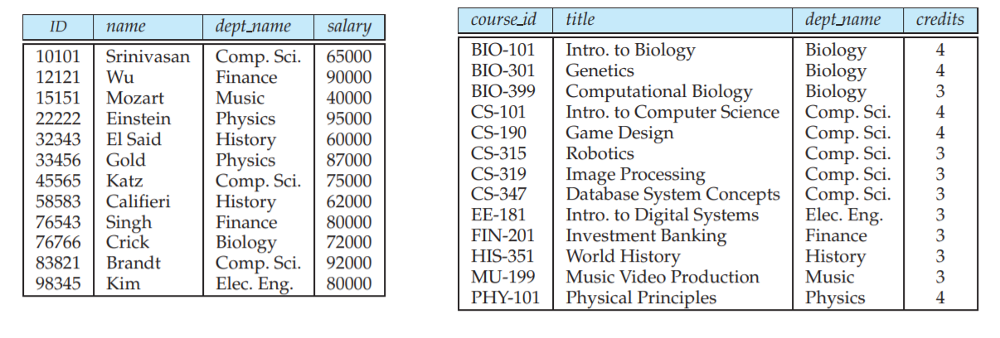

1.basic concepts
1. 关系模型
关系数据库由表 (table) 的集合构成，每个表都有唯一的名字。

表中的一行指出了一组值之间的一种联系，由于表就是这样一组联系的集合，表的概念和数学上的关系的概念是密切相关的，这也是关系数据库名字的由来。
表的基本组成元素可形式化定义如下：
- 域 (Domain)：表中列的取值范围，记为集合 $\small D$，其中的元素具有相同的数据类型；
- 属性名 (attribute)：由于关系的不同列可能来自同一个域，为区分，需要为每一个列起一个名字；
- 元组 (tuple)：指代表中一个特性的行，记为 $\small (d_1, ..., d_n)\in D_1×...×D_n$；
- 关系 (relation)：$\small D_1×D_2×...×D_n$ 的一个子集。
关系模式 (schema) 是关系的结构，关系是关系模式在某一时刻的数据，是动态变化的。关系模式可用 $\small R(\mathrm{A_1:D_1,\ A_2:D_2,...\ ,A_n:D_n})$ 表示，简记为 $\small R(\mathrm{A_1,\ A_2,\ ..., A_n})$。$R$ 中属性向域的映像在很多 DBMS 中一般直接说明为属性的类型、长度等，例如：
$$\mathit{Course}(\mathsf{C\# \ char(3),\ Cname\ char(12),\ Chours\ integer,\ Credit\ float(1)})$$
2. 关系的特性
- 列同质：每一列中的分量来自于同一域，是同一类型的数据；
- 同一关系的不同列可来自于同一个域，但属性名要不同；
- 行/列位置无关：通过属性区分列，通过某几列的值区分行，与位置无关；
- 关系(集合)中不可有重复元素，而表未必遵守此特性；
- 关系遵守关系第一范式，即对于域中的元素的处理必须是原子的。
3. 码
超码 (superkey) 是一组属性的集合，可以在一个关系中唯一标识一个元组。超码的任意超集也是超码，因此超码中可能包含无用的属性，称任意真子集都不为超码的最小超码为候选码 (candidate key)。
一个关系中可能由多组候选码，因此，用主码 (primary key) 代表被数据库设计者选中的、用以在一个关系中区分不同元组的候选码。主码的选择应当慎重，应选择那些值不会或极少变化的那些属性，例如一个人的地址就不应被选为主码。习惯上，把一个关系的主码属性排列在其他属性前。
一个关系模式 $r_1$ 可能包含另一个关系模式 $r_2$ 的主码，此属性在 $r_1$ 上称为参照 $r_2$ 的外码 (foreign key)。$r_1$ 也被称作外码的参照关系 (referencing relation)，$r_2$ 也被称作外码的被参照关系 (referenced relation)。外码的作用是连接两个或多个关系。
4. 关系模型的完整性
① 实体完整性
关系的主码的属性值不为空。即不允许出现不可标识的个体。
② 参照完整性
如果关系 $r_1$ 的外码 $f_k$ 与关系 $r_2$ 的主码 $p_k$ 相对应，则 $r_1$ 中的每个元组的 $f_k$ 或等于 $r_2$ 中某个元组的 $p_k$，或为空。
③ 用户自定义完整性
用户针对具体的应用环境定义的完整性约束条件。例如对域中元素的限制。